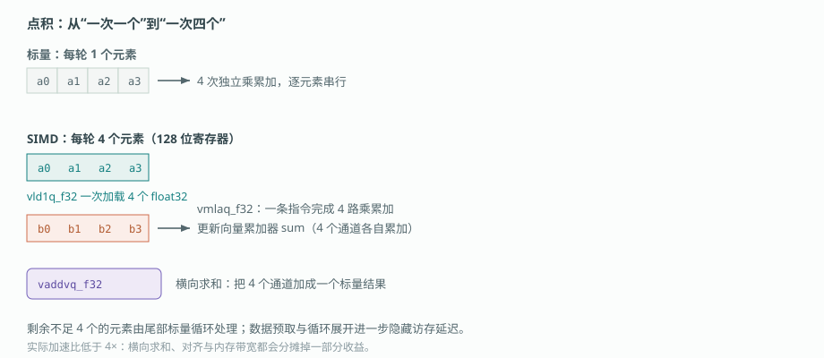
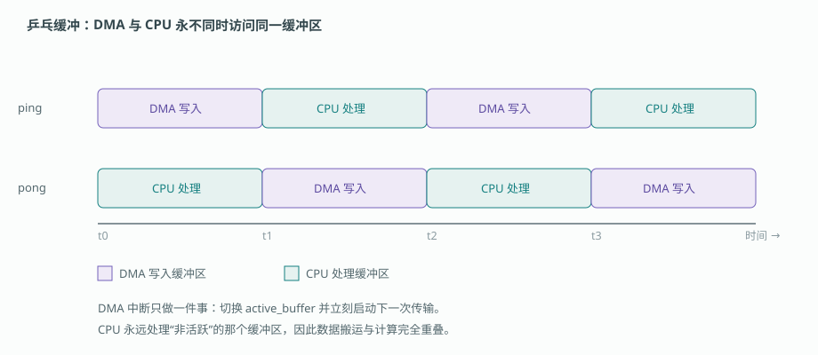

Implementation · Embedded DSP / 21
嵌入式 DSP 芯片开发：架构、CMSIS-DSP 与实时集成
同一套算法，在通用 MCU 上几乎跑不动，在 DSP 架构上却绰绰有余。差别来自针对乘累加与流式数据优化的硬件，以及与之匹配的软件库和缓冲模式。
从浮点原型到受限芯片
算法团队在 MATLAB/Python 里做出浮点原型，效果完美；但目标芯片往往没有 FPU、主频有限、RAM 只有几十 KB。此时关键问题不是“算法对不对”，而是“在给定时钟与位宽下，每秒能处理多少个样本”。
具体例子：一个 32 kHz 采样率、24 阶 FIR 波束成形器要实时运行，目标是一颗无 FPU 的 Cortex-M4。它必须在每 1/32000 秒内完成一帧的全部乘累加。能不能跑得动，取决于三件事：芯片的 MAC 吞吐、是否用定点、以及数据搬运是否与计算重叠。
可检验的目标：本章的确定性程序会算出一个 256 抽头 FIR 在 100 MHz、单 MAC/周期假设下的采样率上界，并验证乒乓缓冲与环形缓冲的正确性。
DSP 架构的针对性优化
通用 MCU 也能跑滤波器，但效率低：DSP 算法的计算模式非常固定——大量乘累加、循环迭代、流式访问。DSP 处理器在硬件层面对这些模式做了针对性设计。
| 特性 | 机制 | 对 DSP 的意义 |
|---|---|---|
| 哈佛架构 | 程序与数据分开、各自总线 | 取指令与取数据可并行，减少共享总线的争用 |
| 硬件 MAC | 专用乘法器 + 加法器流水 | 乘累加可在少数周期内完成，而非多指令实现 |
| 零开销循环 | 硬件循环计数器 | 循环体无分支判断开销，适合 FIR/IIR 迭代 |
| 位反转寻址 | 地址位反转硬件 | FFT 蝶形索引无需软件重排 |
| 饱和运算 | 溢出时自动钳位（非环绕） | 直接防止第 20 章的溢出振荡 |
| 模寻址 | 地址在环形缓冲中自动回绕 | FIR 延迟线循环更新无软件开销 |
这些特性是体系结构层面的能力，具体加速比取决于芯片型号、位宽与代码质量，不存在一个通用的倍数。下面用确定性程序验证“零开销循环”与“模寻址”想达到的效果：环形缓冲 FIR 与直接卷积必须得到完全相同的输出。
平台与选型
嵌入式 DSP 主要有两条路线：专用 DSP 处理器（TI、ADI）与带 DSP/向量扩展的通用 MCU（ARM Cortex-M）。选择取决于算力需求、功耗、生态与开发周期。
| 平台 | 架构特点 | 典型定位 |
|---|---|---|
| TI TMS320C6000 | VLIW，多功能单元并行 | 基站、工业、多通道音频处理器 |
| TI TMS320C5000 | 低功耗双 MAC | 便携音频、助听器、IoT |
| ADI SHARC | SIMD 浮点 DSP | 汽车音响、专业音频 |
| ARM Cortex-M4/M7 | MCU + DSP 指令扩展，M7 带单精度 FPU | IoT、消费电子、电机控制 |
| ARM Cortex-M55/M85 | Helium（MVE）向量扩展 | 端侧 AI 与 DSP 融合 |
选型不能只看峰值 MAC 数。要同时评估：是否需要浮点、实时预算（每帧可用周期数）、功耗与价格、工具链与库的成熟度、以及团队熟悉度。一个可用的原则是：先用吞吐量与位宽预算筛选，再用生态与成本定标。
CMSIS-DSP：块处理与实例状态
ARM 官方的 CMSIS-DSP 把常用 DSP 操作封装为可移植的 C API。命名规律是按数据类型后缀：arm_fir_f32、arm_fir_q15、arm_fir_q31，分别对应单精度浮点与两种定点格式。
它的滤波器 API 采用块处理（block processing）：一次传入一个数据块而非单一样本，以减少函数调用开销、改善缓存局部性。初始化时除了系数，还要提供一段状态缓冲区保存延迟线，长度为
式（1）：N_taps 为抽头数、B_block 为块大小。状态缓冲区搞错长度是常见的初始化 bug。
#include "arm_math.h"
#define TAPS 32
#define BLOCK 128
arm_fir_instance_q15 S;
q15_t state[TAPS + BLOCK - 1]; /* 状态缓冲区长度 = TAPS + BLOCK − 1 */
q15_t coeffs[TAPS];
arm_float_to_q15(coeffs_f32, coeffs, TAPS);
arm_fir_init_q15(&S, TAPS, coeffs, state, BLOCK);
arm_fir_q15(&S, input, output, BLOCK); /* 按块处理 */定点版本要求输入已经按第 20 章的方式归一化到 Q15 范围；浮点系数转入前先用 arm_float_to_q15 量化。不定点则与浮点参考逐样本对比，不能用肉眼听感代替。
SIMD：Neon 与 Helium 向量化
CMSIS-DSP 覆盖了常用操作，但专用算法（非标准窗函数、定制互相关）仍需自己向量化。ARM Cortex-A 支持 Neon，Cortex-M55/M85 支持 Helium（M-Profile Vector Extension）。指令集不同，思路一致：一条指令处理多个元素。
点积的核心模式是加载 → 乘累加 → 横向求和：
float32x4_t vsum = vdupq_n_f32(0.0f);
for (i = 0; i + 4 <= n; i += 4)
vsum = vmlaq_f32(vsum, vld1q_f32(&a[i]), vld1q_f32(&b[i]));
float s = vaddvq_f32(vsum); /* 横向求和 */
for (; i < n; i++) s += a[i] * b[i]; /* 尾部剩余元素 */
float32，用一条乘累加指令更新向量累加器，最后横向求和。尾部不足 4 个的元素仍由标量循环处理。想把加速比再推高，有两个常规手段：循环展开（每次迭代处理 8 或 16 个元素，增加指令级并行）与数据预取（__builtin_prefetch 提前加载下一块数据以隐藏访存延迟）。但请记住：实际加速比低于通道数，横向求和、地址对齐与内存带宽都会分摊收益。
DMA 与乒乓缓冲
实时系统里，“搬运数据”和“计算数据”会争用 CPU。若每个样本都靠 CPU 从 I2S 读取，运算会被 I/O 频繁打断。解决方案是 DMA 直接搬运加乒乓缓冲：用两个（或更多）缓冲区轮流充当“写入目标”与“处理对象”。

void DMA_IRQHandler(void) {
active_buffer ^= 1; /* 切换 */
DMA_start(active_buffer); /* 立即填充另一个 */
}
/* 主循环：处理“非活跃”缓冲区，与 DMA 写入重叠 */乒乓缓冲的妙处在于把搬运与计算完全重叠，吞吐量提升。但要注意同步：主循环必须在 DMA 完成中断之后才去读刚写满的缓冲区，并用内存屏障或缓存维护保证可见性；否则会读到半更新的数据。
交互：吞吐量下界
下面用最简的算术下界模型估算抽头数与 CPU 占用的关系：假设每周期完成 1 次 MAC、无流水线与内存开销，则每样本需 N_taps 个周期。滑块改变抽头数，曲线给出 100 MHz 时钟下按 48 kHz 工作时的 CPU 占用。
动手验证：选择 FIR 抽头数
算术下界模型，忽略流水线、内存与 I/O 开销；真实占用更高。JS 关闭时上述模型与确定性程序仍可独立理解。
完整可执行例程（21_embedded.py）：断言 256 抽头在 100 MHz 下满足 48 kHz 实时、环形缓冲 FIR 与直接卷积逐点相等、乒乓读写不冲突、向量化把乘加次数降到 1/4。
端到端工作流
- 浮点原型：设计算法、验证功能、导出系数（第 19 章）。
- 范围估计：用最大幅输入得到每个节点的极值。
- 定点化与 bit-true 仿真：选 Q 格式、量化、对比浮点（第 20 章）。
- 库或手写实现：CMSIS-DSP 或 Neon/Helium，先跑通再优化。
- DMA 与缓冲集成：乒乓缓冲、中断与内存同步。
- 实测对比：硬件输出对浮点参考做误差分析，闭合三级验证。
边界与失效模式
- 状态缓冲区长度错：FIR 需
N_taps + B_block − 1；少一个元素就会越界写。 - 块处理的延迟与吞吐：块越大，内存局部性好但端到端延迟越高；不能用“吞吐量高”掩盖实时延迟。
- Q 格式与接口不匹配：ADC 码、系数、累加器可能用不同 Q 格式，转换必须显式注释与测试。
- SIMD 的尾巴与对齐：遗忘尾部标量循环、或未对齐访存，会得到错结果或崩溃。
- 乒乓缓冲竞态：未等 DMA 完成就读取、或缺少内存屏障/缓存维护，会读到半更新的数据。
- 只看平均占用：中断、DMA 与缓存抖动会造成尾延迟；需要按最坏情况留余量。
自检：在单 MAC/周期、100 MHz 下，抽头数增加到多少时 48 kHz 实时会超预算？如果芯片有 4 个并行 MAC，答案如何变？
参考资料与接口
- ARM · CMSIS-DSP：FIR/IIR/FFT/自适应等 C API、块处理与 Q 格式接口。
- ARM · Intrinsics reference：Neon 与 Helium 向量内在函数的语义。
- TI · C6000 DSP：VLIW 架构与定点/浮点 DSP 定位。
- MIT OCW · Discrete-Time Signal Processing：滤波与实时实现的数学基础。